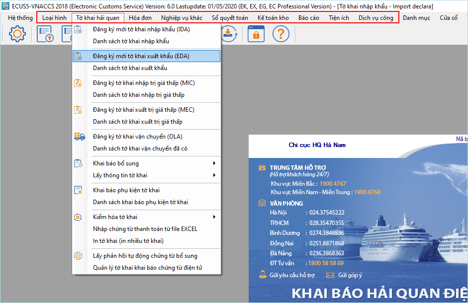
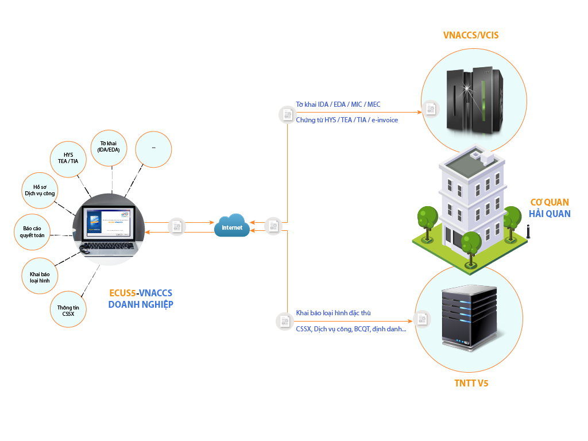

Phần mềm khai báo Hải quan điện tử ECUS5VNACCS được thiết kế theo chuẩn mực của Hệ thống Hải quan điện tử hiện đại, đáp ứng đầy đủ các quy trình nghiệp vụ của hệ thống VNACCS/VCIS đã được Tổng cục Hải quan thẩm định, cấp chứng nhận đạt chuẩn và cho phép kết nối trao đổi thông tin với hệ thống VNACCS/VCIS theo công văn số 1120/CNTT-CNTT ngày 17/11/2015. Ngoài các nghiệp vụ mới được thiết kế theo chuẩn mực hệ thống VNACCS/VCIS, phần mềm vẫn giữ được lối thiết kế truyền thống của phần mềm ECUS mà doanh nghiệp đã quen sử dụng. Phần mềm ECUS5VNACCS cũng đáp ứng đầy đủ các nghiệp vụ mở rộng khác như thủ tục đăng ký danh mục miễn thuế; thủ tục áp dụng chung cả hàng mậu dịch và phi mậu dịch; thủ tục đơn giản đối với hàng hóa trị giá thấp; quản lý hàng hóa tạm nhập, tái xuất; các tiện ích đăng ký Giấy phép; chứng từ một cửa quốc gia; khai vận tải cho các hãng tàu, đại lý hãng tàu.
Các mã nghiệp vụ được tích hợp sẵn vào chương trình, người dùng chỉ việc chọn các nghiệp vụ theo quy trình một cách dễ dàng. Hệ thống bao gồm đầy đủ các phân hệ nghiệp vụ thể hiện tại các menu cụ thể như sau:

Menu Tờ khai hải quan có các nghiệp vụ thông quan hàng hóa tự động e-Declaration bao gồm tờ khai nhập khẩu, tờ khai xuất khẩu, tờ khai vận chuyển OLA. Các chức năng khai bổ sung, lấy thông tin chứng từ liên quan đến tờ khai nhập khẩu, xuất khẩu.
Menu Loại hình đây là nơi doanh nghiệp có thể khai báo các chức năng danh mục Nguyên phụ liệu, sản phẩm, định mức, hợp đồng gia công, phụ kiện hợp đồng và các chức năng thực hiện thanh lý, thanh khoản số liệu cho loại hình đặc thù về Gia công, sản xuất xuất khẩu, chế xuất.
Menu Nghiệp vụ khác là nơi có thể khai báo các nghiệp vụ: Đăng ký chứng từ đính kèm (HYS), Đăng ký danh mục hàng miễn thuế (TEA), Đăng ký danh mục hàng hóa tạm nhập tái xuất (TIA) và tra cứu thông tin chứng từ bảo lãnh (IAS). Các nghiệp vụ đăng ký làm ngoài giờ với cơ quan Hải quan, Khai báo cơ sở sản xuất nơi lưu giữ hàng hóa của doanh nghiệp.
Menu Sổ quyết toán và Kế toán kho là chức năng nghiệp vụ quản lý số liệu kho nhằm phục vụ mục đích lưu trữ, quản lý dữ liệu sổ sách theo nghiệp vụ kho, kế toán và quản lý nguồn dữ liệu cho báo cáo quyết toán nguyên liệu vật tư với Hải quan theo mẫu 15/BCQT.
Menu Dịch vụ công là nghiệp vụ khai báo hơn 168 hồ sơ dịch vụ công.
Menu Tiện ích là nơi có các chức năng tiện ích đi kèm chương trình như: Dịch vụ lưu trữ dữ liệu ECUSDRIVER, trong trường hợp khách hàng có nhu cầu lưu trữ dữ liệu trực tuyến, Đăng ký tờ khai nhập xuất theo chuẩn thông điệp của hệ thống TNTT V5, Các chức năng gửi nhận dữ liệu.
Menu Hóa đơn là nghiệp vụ khai báo hóa đơn điện tử IVA.

Các tính năng nghiệp vụ trên được thiết kế sẵn để đáp ứng các nghiệp vụ của hệ thống VNACCS/VCIS đồng thời phục vụ các nhu cầu quản lý nội bộ theo yêu cầu riêng của doanh nghiệp. Các chức năng chính để trao đổi giữa doanh nghiệp và hệ thống Hải quan chủ yếu ở các chức năng nghiệp vụ sau:
Tờ khai hải quan: Bao gồm tờ khai nhập khẩu, tờ khai xuất khẩu và các chức ăng khai báo khác phục vụ hồ sơ tờ khai.
Loại hình: Sử dụng để khai nghiệp vụ của các loại hình đặc thù như: Gia công, sản xuất xuất khẩu, chế xuất.
Sổ quyết toán và Kế toán kho: Sử dụng đối với doanh nghiệp loại hình Gia công, Sản xuất xuất khẩu, Chế xuất nhằm quản lý, báo cáo quyết toán với cơ quan Hải quan khi cơ quan Hải quan cần kiểm tra thực tế.
Mời quý doanh nghiệp tham khảo video giới thiệu về phần mềm: